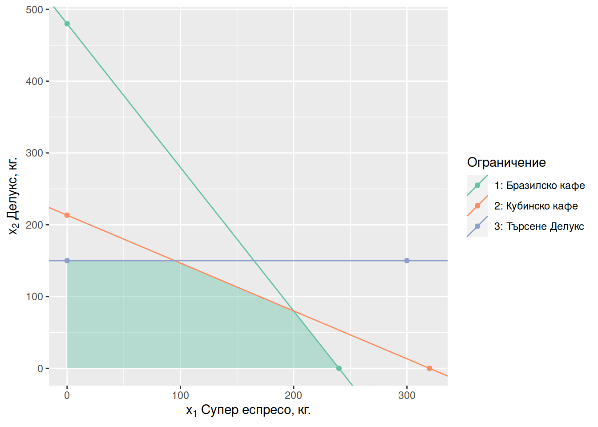

Част 2 Графичен метод
2.1 Планиране на производство
Бутиково кафене в София предлага два продукта: Супер еспресо и Делукс еспресо. За приготвянето на един килограм от първия вид кафе са необходими по равни части бразилско и кубинско кафе, а рецептата за Делукс предвижда смес от бразилско и кубинско кафе в пропорция 1 към 3. Доставчиците са готови да осигурят 120 кг бразилско и 160 кг. кубинско кафе. Заведението знае, че няма да може да продаде повече от 150 кг. Супер еспресо. От всеки продаден килограм Супер еспресо заведението печели 40 лв., докато печалбата от килограм Делукс възлиза на 50 лв.
Колко от двата типа кафе ще препоръчате на кафенето да смеси?
2.1.1 Математически модел
2.1.2 Допустимо множество
## Warning: Removed 1 rows containing missing values (geom_text).
## Warning: Removed 1 rows containing missing values (geom_text).
## Warning: Removed 1 rows containing missing values (geom_text).
2.1.3 Целева функция, нормален вектор
2.1.4 Оптимален план
2.1.5 Реализация в Excel
Линк към пример за реализация в Excel.
2.1.6 Реализация в R
2.1.7 Дефицитност на ресурси
Кои ресурси са дефицитни в намерения оптимален план?
2.1.8 Допустими граници на промяна
В какви граници може да се променя ограничението за бразилското кафе без да се промени характера на оптималния план (без да се променят дефицитните ресурси)?
В какви граници може да се променя ограничението за кубинското кафе без да се промени характера на оптималния план (без да се променят дефицитните ресурси)?
В какви граници може да се променя ограничението за търсенето на Супер еспресо кафе без да се промени характера на оптималния план (без да се променят дефицитните ресурси)?
2.1.9 Скрити цени
Доставчикът предлага да достави допълнителни 10 кг. кубинско кафе на цена от 20 лв./кг. Бихте ли препоръчали на заведението да приеме тази оферта?
Съседно кафене предлага да купи 5 килограма от бразилското кафе на цена 40 лв./кг. Изгодно ли е за заведението да продаде това количество кафе?
2.2 Планиране на производство (2)
Фирма, специализирана в производство на зимни палта се опитва да посрещне търсенето на нейните стоки с възможно най-малки разходи. Всеки работник, нает в началото на сезона работи през целия сезон, произвежда 80 палта и получава 6000 лв. заплата. В началото на годината фирмата разполага с 30 работника.
Търсенето на палта има силни сезонни колебания и фирмата има три опции, за да отговори на тези вариации:
- работниците могат да работят и по-продължително, но допълнителният труд се заплаща 50% по-скъпо и работниците могат да работят не повече от 20% повече от нормалното работно време.
- Произведени в предишния период палта могат да се складират на цена от 12 лв. на сезон за всяко палто.
- Фирмата може да назначава и освобождава служители на цени 500 лв. за назначаване и 420 лв. за освобождаване на служите (за целия сезон).
- Фирмата няма начални запаси от готови палта
Маркетинговият отдел на предприятието оценява, че през следващите четири сезона търсенето ще възлиза на съответно 5000, 2000, 500 и 1500 палта.
Изгответе математически модел с който да намерите оптималния план (в смисъл на най-ниски разходи) за тази фирма.